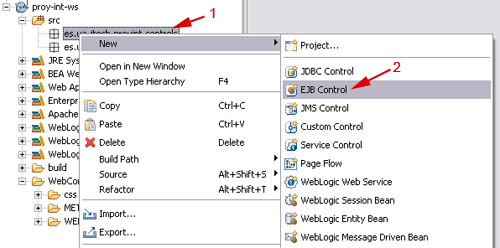
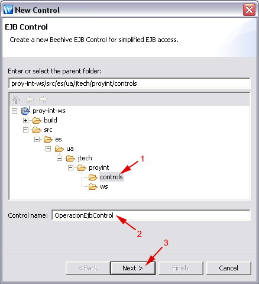
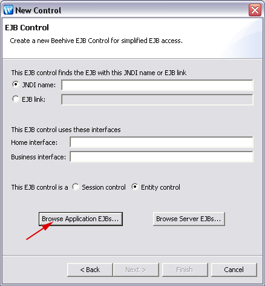
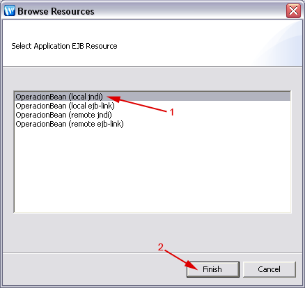
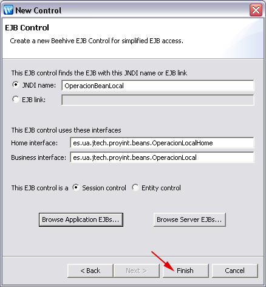
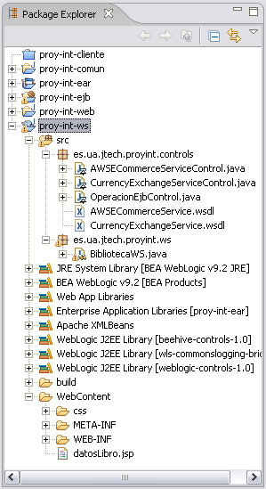

Servicios Web
Introducción
En esta sesión de integración vamos a ofrecer una serie de funcionalidades de la aplicación como servicios web. Concretamente expondremos como servicio web las operaciones implementadas mediante EJBs. Además, utilizaremos servicios web externos para obtener información extendida sobre los libros de nuestra biblioteca.
Creación de servicios web
Lo primero que haremos será crear un servicio web de la biblioteca que permita realizar las siguientes operaciones:
- LibroTO[] listadoDisponibles()
- OperacionTO[] listadoPrestamos()
- OperacionTO[] listadoReservas()
- OperacionTO[] listadoTodosLibros()
- String realizaReserva(String login, String password, String socio, String isbn)
Para añadir este servicio web a la aplicación seguiremos los siguientes pasos:
- Creamos, dentro del proyecto EAR de la aplicación, un proyecto de servicios web (Web Services Project). Este proyecto se llamará proy-int-ws, y lo crearemos con las opciones por defecto.
- Dentro de los fuentes del proyecto creamos dos paquetes: es.ua.jtech.proyint.ws, donde crearemos la clase que implementará nuestro servicio web, y es.ua.jtech.proyint.controls, donde crearemos los controles Beehive para acceder a los componentes que necesitemos (EJBs y servicios web externos en nuestro caso).
- Todas estas operaciones están definidas en el EJB implementado en sesiones anteriores. Para ofrecer
las operaciones del EJB desde nuestro servicio web crearemos un EJB Control siguiendo
los siguientes pasos:
- Pulsando con el botón derecho sobre el paquete es.ua.jtech.proyint.controls seleccionamos
New > EJB Control.

- A la clase que implementará el control le damos como nombre OperacionEjbControl y pulsamos
el botón Next.

- En la siguiente pantalla pulsamos sobre el botón Browse Application EJBs... para buscar entre
los EJBs definidos dentro de nuestra aplicación (EAR).

- En la lista veremos el EJB OperacionBean y las posibles formas de acceder a él. Seleccionamos
en enlace JNDI a la interfaz local.

- Automáticamente se rellenarán los datos que el control necesita para acceder a dicho EJB. Pulsamos el botón
Finish para finalizar el asistente y crear el control.

- Pulsando con el botón derecho sobre el paquete es.ua.jtech.proyint.controls seleccionamos
New > EJB Control.
- Creamos en el paquete es.ua.jtech.proyint.ws un nuevo servicio web BibliotecaWS.
- Añadimos a dicho servicio web una referencia al control OperacionEjbControl.
- Creamos una operación delegada en el servicio web para el método listadoDisponibles del control EJB.
- Por defecto esta operación devuelve el listado como un objeto List. Sin embargo, esto nos
puede dar problemas, ya que al no quedar expuesto en la interfaz del servicio el tipo de datos propio
LibroTO no se generarán los serializadores y deserializadores necesarios. Por lo tanto,
modificamos el método para que devuelva un array de dichos objetos de la siguiente forma:
public LibroTO[] listadoDisponibles() { List libros = operacionEjbControl.listadoDisponibles(); LibroTO[] result = new LibroTO[libros.size()]; libros.toArray(result); return result; } - Repetimos el proceso para las operaciones listadoPrestamos, listadoReservas, y listadoTodosLibros.
- Generamos un método delegado para la operación realizaReserva. Dicha operación debería
poder ser invocada únicamente por un usuario con permisos para hacerlo. Por lo tanto tendremos
que añadir código para realizar el control de usuarios en este método, para así evitar dejar abierta
una operación que no debería ser pública. Añadiremos dos parámetros para indicar el usuario que realiza
la petición (login y password) y modificamos el código como se muestra a
continuación:
public String realizaReserva(String login, String password, String socio, String isbn) { try { FactoriaBOs fb = FactoriaBOs.getInstance(); IUsuarioBO iu = fb.getUsuarioBO(); UsuarioTO usuario = iu.autenticaUsuario(login, password); if (usuario != null) { operacionEjbControl.realizaReserva(socio, isbn); return "Reserva realizada correctamente"; } else { throw new SOAPFaultException(null, "Login y/o password incorrecto", "Servicio Web Biblioteca", null); } } catch (Exception e) { throw new SOAPFaultException(null, "Error al realizar la reserva: " + e.getMessage(), "Servicio Web Biblioteca", null); } }
Acceso a servicios web externos
Vamos a añadir a la aplicación la funcionalidad de obtener los detalles de un libro (portada, precio, editorial, fecha de publicación, ...). Para hacer esto recurriremos a los servicios web de Amazon. Dado que los precios que ofrece Amazon están en dólares, utilizaremos el servicio web Currency Exchange Service de XMethods para obtener el cambio actual y así convertir dichos precios a euros. Seguiremos los siguientes pasos:
- Añadimos en el proyecto proy-int-comun un nuevo Transfer Object que extienda
LibroTO para añadir atributos adicionales a los libros:
package es.ua.jtech.proyint.to; public class DetalleLibroTO extends LibroTO { private static final long serialVersionUID = -5489054672037280657L; float precio; String imagen; int imagenAncho; int imagenAlto; String editorial; String fechaPublicacion; String urlDetalles; // Getters y setters ... } - Creamos en el paquete es.ua.jtech.proyint.controls del proyecto proy-int-ws
un control (Service Control) para acceder al servicio web de Amazon, cuyo documento WSDL se
puede encontrar en la siguiente dirección:
http://webservices.amazon.com/AWSECommerceService/AWSECommerceService.wsdl
NotaDurante el proceso de creación del control se debe indicar que se creen los tipos mediante JAX-RPC. - Añadimos al servicio web una referencia al control anterior, y una operación DetalleLibroTO [] buscaLibroAmazon(String isbn),
que tomará como parámetro el ISBN del libro que buscamos, y nos devolverá un objeto DetalleLibroTO
con los datos de dicho libro, accediendo para ello al servicio web de Amazon mediante el control referenciado:
public DetalleLibroTO [] buscaLibroAmazon(String isbn) { ItemLookup itemLookup = new ItemLookup(); itemLookup.setAWSAccessKeyId("15JCR9XWMPTGV91JC1R2"); ItemLookupRequest shared = new ItemLookupRequest(); shared.setSearchIndex("Books"); shared.setIdType(IdType_Enumeration.isbn); shared.setItemId(new String []{ isbn }); shared.setResponseGroup(new String [] { "Offers", "Medium" }); itemLookup.setShared(shared); ItemLookupResponse response = AWSECommerceServiceControl1 .itemLookup(itemLookup); List<DetalleLibroTO> libros = new ArrayList<DetalleLibroTO>(); Items [] listaResultados = response.getItems(); if(listaResultados==null) { return null; } for (Items resultado : listaResultados) { Item_Element [] listaArticulos = resultado.getItem(); if(listaArticulos==null) { return null; } for (Item_Element articulo : listaArticulos) { ItemAttributes atributos = articulo.getItemAttributes(); DetalleLibroTO libro = new DetalleLibroTO(); libro.setIsbn(isbn); libro.setTitulo(atributos.getTitle()); libro.setNumPaginas(atributos.getNumberOfPages().intValue()); Image imagen = articulo.getMediumImage(); libro.setImagen(imagen.getURL()); libro.setImagenAlto(imagen.getHeight().get_value().intValue()); libro.setImagenAncho(imagen.getWidth().get_value().intValue()); String [] autores = atributos.getAuthor(); String listaAutores = ""; for(String autor: autores) { listaAutores = autor + "; "; } libro.setAutor(listaAutores); libro.setPrecio(atributos.getListPrice() != null ? atributos .getListPrice().getAmount().floatValue()/100 : -1); libro.setEditorial(atributos.getPublisher()); libro.setUrlDetalles(articulo.getDetailPageURL()); libro.setFechaPublicacion(atributos.getPublicationDate()); libros.add(libro); } } DetalleLibroTO [] result = new DetalleLibroTO[libros.size()]; libros.toArray(result); return result; } - Creamos en el paquete es.ua.jtech.proyint.controls del proyecto proy-int-ws
un control (Service Control) para acceder al servicio web Currency Exchange Service,
cuyo documento WSDL se puede encontrar en la siguiente dirección:
http://www.xmethods.net/sd/2001/CurrencyExchangeService.wsdl
- Añadimos una referencia al control anterior en el servicio web y creamos una operación delegada para la operación getRate del servicio al que accede. Renombraremos nuestra operación y le daremos como nombre tasaCambio.
- Añadimos a la carpeta WebContent del proyecto proy-int-ws un JSP llamado
datosLibro.jsp que
muestre los datos de un libro utilizando para ello el servicio web de Amazon. Deberá tomar como entrada
un parámetro isbn con el ISBN del libro buscado. El código fuente de este JSP será el siguiente:
<%@ page language="java" contentType="text/html;charset=UTF-8"%> <!DOCTYPE html PUBLIC "-//W3C//DTD HTML 4.01 Transitional//EN" "http://www.w3.org/TR/html4/loose.dtd"> <html> <head> <meta http-equiv="Content-Type" content="text/html; charset=ISO-8859-1"> <title>Biblioteca JTech - Datos del Libro</title> <link rel="stylesheet" type="text/css" href="css/style.css" title="800px style" media="screen,projection" /> </head> <body> <div id="wrap"> <h2>Datos del libro</h2> <% es.ua.jtech.proyint.ws.BibliotecaWS cliente = new es.ua.jtech.proyint.ws.BibliotecaWS(); es.ua.jtech.proyint.ws.BibliotecaWSClientInitializer .initialize(null, cliente); es.ua.jtech.proyint.to.DetalleLibroTO [] libros = cliente.buscaLibroAmazon(request.getParameter("isbn")); float tasaCambio = cliente.tasaCambio("usa", "euro"); java.text.NumberFormat formato = java.text.NumberFormat.getCurrencyInstance(); if(libros!=null && libros.length>0) { %> <table> <tr> <td valign="top"> <img src="<%= libros[0].getImagen() %>" width="<%= libros[0].getImagenAncho() %>" height="<%= libros[0].getImagenAlto() %>"/> </td> <td valign="top"> <p><strong>ISBN: </strong><%= libros[0].getIsbn() %></p> <p><strong>Título: </strong><%= libros[0].getTitulo() %></p> <p><strong>Autor: </strong><%= libros[0].getAutor() %></p> <p><strong>Editorial: </strong> <%= libros[0].getEditorial() %></p> <p><strong>Fecha de publicación: </strong> <%= libros[0].getFechaPublicacion() %></p> <p><strong>Número de páginas: </strong> <%= libros[0].getNumPaginas() %></p> <p><strong>Precio: </strong>$<%= libros[0].getPrecio() %> (<%= formato.format(libros[0].getPrecio()*tasaCambio) %>) </p> <p><a href="<%= libros[0].getUrlDetalles() %>" target="_blank">Más información</a></p> </td> </tr> </table> <% } else { %> <p>No se han encontrado datos del libro</p> <% } %> <a href="javascript: history.back()">Volver atrás</a> </div> </body> - Copiamos la carpeta css del proyecto proy-int-web a proy-int-comun, para así mantener el mismo estilo en el JSP con los datos del libro.
- Añadir un enlace en la página jsp/biblio/listadoLibros.jsp del proyecto proy-int-web a
la página con los detalles de cada libro. Cada fila de la tabla del listado de libros deberá contener un enlace
a la página datosLibro.jsp de proy-int-ws en el que se le pase como parámetro
el ISBN correspondiente al libro de dicha fila:
<a href="/proy-int-ws/datosLibro.jsp?isbn=<bean:write name="operacion" property="libro.isbn" />">...</a>
Cliente para los servicios web (*)
Crear un cliente Java con Netbeans para nuestro servicio web de la biblioteca. El programa deberá invocar la operación listadoDisponibles y mostrar en la consola el listado de libros.
/**
* /**
* * Clase que representa un libro. Destacar que la
* * app no permite 2 ejemplares de un mismo libro
* * @author $Author: malozano $
* * @version $Revision: 1.14 $
* */ <-- No debe cerrar el comentario aquí
*
Deberemos eliminar el cierre del comentario interno para evitar problemas de compilación en estas clases. Para hacer esto podemos pinchar sobre los errores de compilación que se muestran en la consola de Netbeans para que nos lleve a la clase afectada, y ahí realizar la corrección.
Resumen
|  |
Se deberán implementar los siguientes componentes dentro del proyecto proy-int-ws:
Se deberá añadir el siguiente componente al proyecto proy-int-comun:
Se deberá modificar el siguiente componente en el proyecto proy-int-web:
|